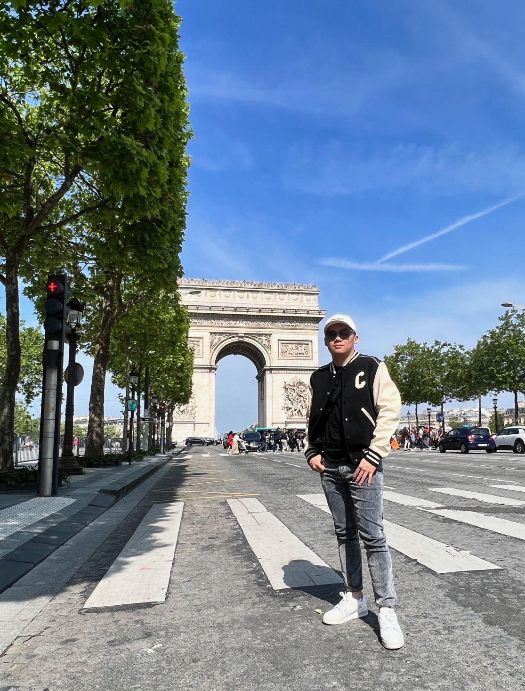

Introduction
My name is Chen-Yu Hsia, but you can also call me Eric. I was born in Taiwan and am studying for my third year at Northeastern University. My majors are data science and business administration, with a concentration in entrepreneurial startups. My intellectual interests are a combination of data science and running a business. To further expand, my ultimate goal is to run the family business more successfully and achieve promising business results to make my parents proud. I am fascinated by how we can use data across various fields. Moreover, the skill of data analysis can implemented to different usages like discovering patterns, visualizing, and driving decisions. My hobbies are playing video games, traveling to different countries, playing basketball, and shopping. Moreover, I have a deep interest in watches and cars. We will have to find a balance between money earned and money spent. I strongly agree with the idea that you have to pay to make more money. Improving the lifestyle and living environment is the force that pushes us to improve. Moreover, the more we get in touch with new objects or ideas, the more it helps us think and relate, which provides us with more novel ideas.
